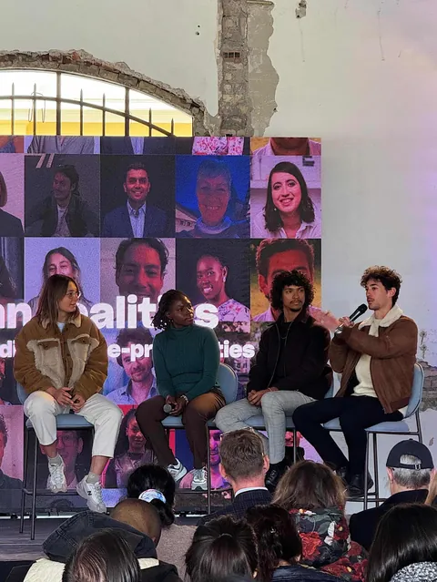
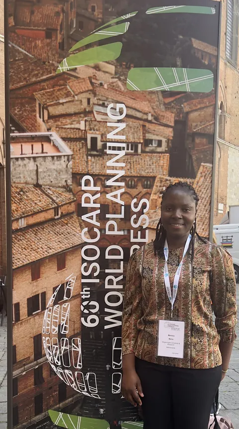
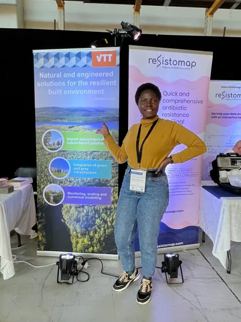

Events & Conferences
Conferences and masterclasses where I learned from practitioners in urban planning, water management and sustainability, and contributed as a facilitator.

Better Society Academy 2026 Masterclass
Participant · Inclusive and resilient citiesWorked in a team on a housing accessibility project in Rome, mapping stakeholders before proposing solutions.
Explore event+

Better Society Academy 2026 Masterclass
Worked in a team on a housing accessibility project in Rome, mapping stakeholders before proposing solutions.
Organiser: TSH Talent Foundation
I joined a community of urban changemakers in Rome to explore how cities can become more inclusive, resilient and ready for the future. The programme combined thought-provoking discussions with practical workshops that challenged me to look beyond good intentions and focus on lasting impact.
What I took away
Meaningful change takes advocacy, persistence and a willingness to challenge familiar ways of working. Strong ideas grow through listening, collaboration and trusted relationships. For me, a lasting measure of impact is whether an idea continues to make a difference beyond the person who started it.
Putting ideas into practice
In workshops facilitated by Muskan Jain and Marco van Hout, I worked with a small team on a housing accessibility project in Rome. We mapped stakeholders, had conversations and stayed focused on understanding the problem before proposing solutions. The experience reinforced the value of practical networks that turn shared ideas into tangible action.
I left with fresh perspectives on urban inclusion, meaningful connections and a stronger appreciation for the relationships that help ideas take root.
TSH Talent Foundation
ISOCARP Congress 2024
Participant & Urban Conversation FacilitatorCo-facilitated an Urban Conversation workshop and explored the limits of AI in participatory planning.
Explore event+

ISOCARP Congress 2024
Co-facilitated an Urban Conversation workshop and explored the limits of AI in participatory planning.
Organiser: International Society of City and Regional Planners (ISOCARP)
I attended the ISOCARP Congress in Italy, joining urban professionals to exchange ideas about the future of cities. Alongside attending sessions, I helped facilitate an Urban Conversation workshop with fellow congress team members, creating space for focused discussion and the exchange of perspectives.
Exploring AI and urban storytelling
A session on participatory planning explored how AI could translate people's visions for their cities into images and narratives. Watching participants experiment with the tool showed me its potential to make ideas more accessible, while also revealing how easily it could misinterpret them.
One participant described a tree bringing life to a community. The tool interpreted this as a tree glowing with stars and colourful lights. That gap between the intended meaning and the generated image highlighted the need to ground visual storytelling in context and lived experience.
What I took away
For me, AI can support imagination and dialogue, but it should complement real-world examples, rigorous analysis and professional judgement. In participatory planning, visuals need careful explanation so that they help stakeholders explore possibilities without creating false impressions or unrealistic expectations.
International Society of City and Regional Planners
IWA Congress 2022
Participant · IWA memberLearned how wastewater can provide water, nutrients and public-health data, and joined the IWA as a member.
Explore event+

IWA Congress 2022
Learned how wastewater can provide water, nutrients and public-health data, and joined the IWA as a member.
Organiser: International Water Association (IWA)
Attending the IWA Congress gave me the opportunity to learn from academics and practitioners about nature-based solutions, wastewater management, water-sensitive planning, and infrastructure planning and management. These discussions deepened my understanding of how water systems contribute to urban wellbeing in a changing climate.
Learning through connection
The presentations and conversations I took part in left a lasting impression. These exchanges were meaningful and strengthened my interest in managing the urban environment.
Technical tour: seeing wastewater differently
A technical tour organised by the Finnish Water Forum as part of the congress broadened my view of wastewater as a resource. Discussions explored its potential to provide recovered water, nutrients, fertilisers and soil conditioners, as well as data that can inform public health monitoring.
What stood out was the range of disciplines involved: data analysis, virology, biology, chemistry, infrastructure planning and environmental management. Hearing these perspectives together showed me how wastewater management can connect research and practice to address shared urban challenges.
What I took away
I left with a stronger appreciation of wastewater's potential to support sustainable cities through resource recovery and collaboration across disciplines. Alongside nature-based solutions, it offers opportunities to rethink how cities manage limited resources. I also became a member of the International Water Association, opening a new avenue for continued learning and professional connection.
International Water Association